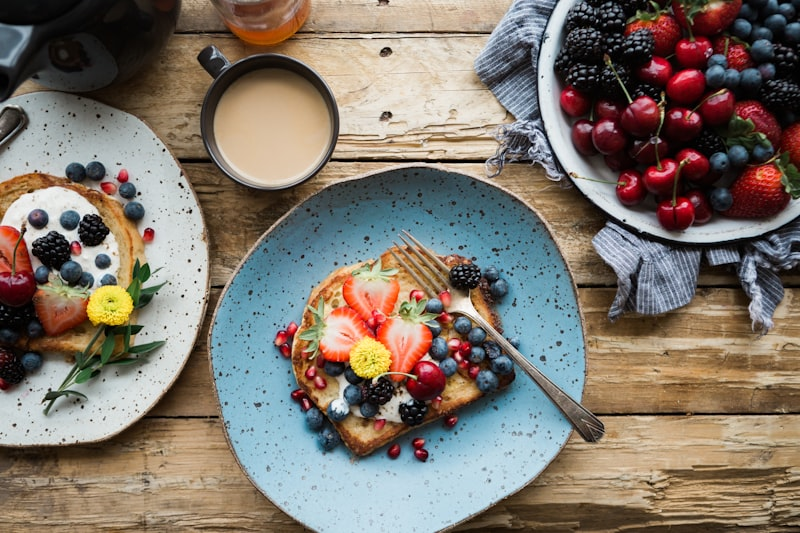
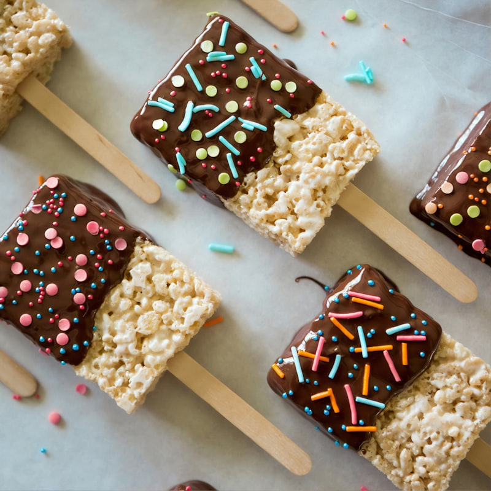
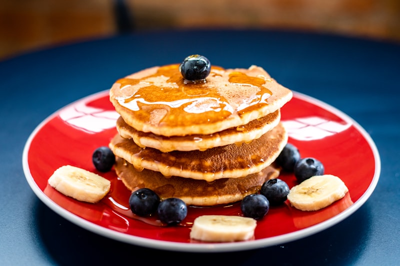
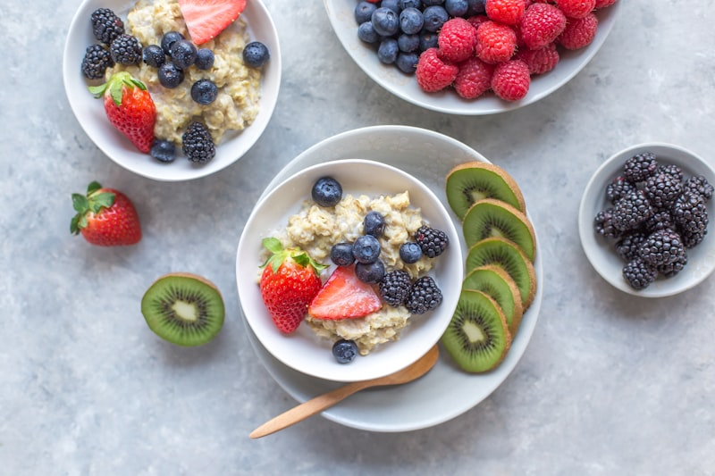

Tu cereal estrella con recetas para desayunos, snacks y postres hormonales
La avena es uno de los alimentos más poderosos que existen para estabilizar tu insulina — y probablemente ya la tienes en tu cocina.
Su secreto se llama betaglucano, un tipo de fibra soluble que forma un gel en tu intestino y frena la absorción de glucosa. Resultado: energía estable durante horas, sin picos ni bajadas.
Pero OJO — no cualquier avena funciona igual, y cómo la preparas cambia COMPLETAMENTE su efecto en tu glucosa.
3 reglas de oro para que tu avena sea hormonal:
• 🥣 USA AVENA TRADICIONAL (en hojuelas) — La instantánea tiene IG 79 vs IG 55 de la tradicional
• 🥛 EVITA LECHE CON AZÚCAR — Usa leche vegetal sin azúcar (almendras, coco, soya) o agua
• 🥜 SIEMPRE AGREGA PROTEÍNA + GRASA — Yogur griego, huevo, mantequilla de maní o nueces
Con estas 3 reglas, cada receta de esta guía se convierte en un desayuno, snack o postre que alimenta tu equilibrio hormonal.

El desayuno marca el tono hormonal de todo tu día. Estas recetas con avena te dan energía sostenida de 4+ horas sin picos de insulina.

Los antojos de las 3-4pm son señales de montaña rusa glucémica. Estos snacks con avena te mantienen estable entre comidas y evitan que recurras a galletas o dulces.

Sí, puedes comer postres con avena que sean deliciosos Y hormonalmente inteligentes. La avena como base reemplaza harinas refinadas y aporta la fibra que tu cuerpo necesita.

Domina el arte de la avena hormonal con estas técnicas y recetas que elevan tu nivel. Desde avena salada hasta agua de avena — estrategias que maximizan los beneficios.